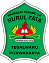

Madrasah Tsanawiyah yang berkomitmen membentuk generasi Muslim yang beriman, berilmu, dan berakhlak mulia. Berdiri sejak 2004, kami terus tumbuh bersama masyarakat Tegalwaru dan sekitarnya.
Siswa-siswi MTs Nurul Fata Tegalwaru kembali mengharumkan nama sekolah dengan berhasil meraih Juara II pada Musabaqoh Tilawatil Quran (MTQ) tingkat Kabupaten Purwakarta yang diselenggarakan di Pendopo Kabupaten Purwakarta pada bulan Juni 2025.
Baca Selengkapnya →Kepala MTs Nurul Fata Tegalwaru
Puji syukur ke hadirat Allah Subhanahu Wa Ta'ala atas segala nikmat dan karunia-Nya yang tiada terhingga. Shalawat serta salam semoga senantiasa tercurahkan kepada Nabi Muhammad Shallallahu 'Alaihi Wasallam, keluarga, sahabat, serta seluruh pengikutnya hingga akhir zaman.
Atas nama keluarga besar MTs Nurul Fata Tegalwaru, kami menyampaikan selamat datang di website resmi madrasah kami. Madrasah adalah rumah ilmu, tempat di mana generasi bangsa ditempa — bukan hanya untuk menjadi cerdas secara akademik, tetapi juga kokoh dalam iman dan mulia dalam akhlak.
MTs Nurul Fata Tegalwaru hadir dengan tekad untuk mencetak generasi Muslim yang beriman, berilmu, dan berakhlak mulia — sesuai dengan nama "Nurul Fata" yang berarti cahaya pemuda. Kami berkomitmen untuk terus meningkatkan kualitas pendidikan, fasilitas, dan pelayanan demi memberikan yang terbaik bagi putra-putri Anda.
Kami mengajak seluruh orang tua, wali murid, dan masyarakat untuk bersama-sama mendukung dan berperan aktif dalam proses pendidikan. Karena keberhasilan sebuah madrasah adalah keberhasilan seluruh elemen masyarakat yang mendukungnya.
Semoga Allah SWT senantiasa meridhoi setiap langkah perjuangan kita dalam mencerdaskan generasi umat. Aamiin Ya Rabbal 'Aalamiin.
Mengenal lebih dekat madrasah kami — dari visi dan misi yang menjadi landasan, identitas resmi, hingga perjalanan panjang yang membentuk kami hari ini.
Berlandaskan nilai-nilai Islam Ahlussunnah Wal Jama'ah, kami hadir untuk membentuk generasi yang tidak hanya cerdas secara akademik, tetapi juga kuat secara spiritual dan mulia akhlaknya.
Terwujudnya peserta didik yang beriman, bertakwa, berilmu, berakhlak mulia, mandiri, dan berdaya saing di era global berlandaskan nilai-nilai Islam Ahlussunnah Wal Jama'ah.
Informasi resmi dan legalitas MTs Nurul Fata Tegalwaru yang terdaftar pada Kementerian Agama RI.
Dari sebuah tekad sederhana, kini MTs Nurul Fata tumbuh menjadi madrasah yang dipercaya masyarakat Tegalwaru selama lebih dari dua dekade.
MTs Nurul Fata Tegalwaru berdiri pada tahun 2004 atas prakarsa tokoh masyarakat dan ulama setempat yang prihatin dengan minimnya lembaga pendidikan Islam tingkat menengah di wilayah Kecamatan Tegalwaru. Bermula dari sebuah bangunan sederhana dengan puluhan siswa dan beberapa tenaga pengajar, madrasah ini tumbuh perlahan namun pasti berkat kepercayaan dan dukungan masyarakat sekitar.
Seiring berjalannya waktu, madrasah terus berbenah. Gedung permanen dibangun, fasilitas dilengkapi satu per satu, dan tenaga pendidik yang berkualitas mulai bergabung. Pada tahun 2010, MTs Nurul Fata resmi mendapatkan akreditasi dari BAN-S/M — sebuah pengakuan formal yang menjadi tonggak kepercayaan diri lembaga. Program Tahfidz Qur'an kemudian diintegrasikan ke dalam kurikulum sebagai wujud komitmen terhadap pendidikan keagamaan yang kuat.
Kini, MTs Nurul Fata Tegalwaru telah memiliki lebih dari 400 siswa aktif, 32 tenaga pendidik dan kependidikan, serta berbagai fasilitas penunjang yang terus dibenahi. Nama "Nurul Fata" — yang berarti cahaya pemuda — menjadi cerminan harapan para pendiri: bahwa setiap siswa yang menimba ilmu di madrasah ini akan menjadi pemuda-pemudi yang bercahaya dengan ilmu, iman, dan akhlak mulia.
Kami terus meningkatkan sarana dan prasarana demi kenyamanan dan efektivitas proses belajar mengajar.
12 ruang kelas yang nyaman, bersih, dan dilengkapi ventilasi yang baik untuk mendukung konsentrasi belajar siswa setiap harinya.
Lab komputer dengan 30 unit PC dan koneksi internet, mendukung literasi digital dan praktik mata pelajaran TIK.
Koleksi lebih dari 3.000 judul buku, meliputi buku pelajaran, kitab Islam, karya sastra, dan bacaan umum yang terus diperbarui.
Mushola yang bersih dan nyaman sebagai pusat kegiatan ibadah, shalat berjamaah, dan pembinaan keagamaan seluruh warga madrasah.
Lapangan serbaguna untuk kegiatan olahraga, upacara bendera, dan berbagai kegiatan luar ruangan siswa.
Fasilitas sanitasi yang bersih dan terawat, terpisah putra-putri, tersedia di setiap blok gedung madrasah.
Cabang Tilawatil Qur'an Putra
2025Kompetisi Sains Madrasah (KSM)
2024Jambore Kepanduan Purwakarta
2024Program pengembangan bakat dan karakter siswa di luar kegiatan akademik formal.
Membentuk kemandirian, kepemimpinan, dan jiwa gotong royong melalui kegiatan kepanduan, perkemahan, dan bakti sosial.
✓ WajibMelatih kedisiplinan, kekompakan, dan cinta tanah air melalui baris-berbaris dan tugas pengibaran bendera.
PilihanPalang Merah Remaja — melatih siswa dalam pertolongan pertama, kepedulian sosial, dan kesiapsiagaan bencana.
PilihanMengembangkan kemampuan teknologi informasi mulai dari dasar komputer, mengetik, hingga aplikasi perkantoran.
PilihanProgram hafalan Al-Qur'an terstruktur dengan target minimal 2 juz bagi setiap siswa selama masa belajar.
✓ WajibSepak bola, bola voli, dan bulu tangkis — membentuk fisik yang sehat dan semangat sportivitas siswa.
PilihanSeni kaligrafi, marawis, dan hadrah — menumbuhkan kecintaan terhadap budaya Islam dan seni Islami.
PilihanMelatih kemampuan berpidato dalam bahasa Indonesia dan bahasa Arab untuk meningkatkan kepercayaan diri.
PilihanDidukung oleh tenaga pendidik berpengalaman dan berdedikasi tinggi dalam mencetak generasi Muslim yang unggul.
Kami membuka kesempatan bagi putra-putri terbaik untuk bergabung dan menimba ilmu di MTs Nurul Fata Tegalwaru.
Datang langsung ke kantor madrasah atau unduh formulir di website ini.
Siapkan seluruh dokumen persyaratan yang dibutuhkan.
Serahkan formulir beserta berkas ke panitia PPDB pada jam kerja.
Seleksi berkas dan wawancara, pengumuman hasil diterbitkan secara resmi.
15 Juli – 31 Agustus 2026 · Pukul 08.00–14.00 WIB
Momen-momen berharga dari berbagai kegiatan akademik dan non-akademik di MTs Nurul Fata Tegalwaru.
Jl. Pesantren No. 12, Desa Tegalwaru,
Kec. Tegalwaru, Kab. Purwakarta,
Jawa Barat 45655
(0232) 123-4567
0812-3456-7890 (Tata Usaha)
info@mtsnurulfatategalwaru.sch.id
Senin – Kamis: 07.00 – 15.30 WIB
Jumat: 07.00 – 11.30 WIB
Sabtu: 07.00 – 12.30 WIB

Jl. Warung Jeruk Desa Sukahaji, Tegalwaru, Purwakarta 41165
🗺️ Buka di Google Maps ↗Terima kasih, kami akan menghubungi Anda dalam 1×24 jam kerja.
Kepercayaan orang tua dan kebanggaan alumni adalah motivasi terbesar kami untuk terus berkembang.
Alhamdulillah, anak saya sangat berkembang sejak masuk MTs Nurul Fata. Bukan hanya nilai akademiknya yang bagus, tapi akhlak dan ibadahnya pun jauh lebih baik. Gurunya sabar dan perhatian, saya sangat puas menitipkan anak di sini.
Saya alumni angkatan 2018. Nilai-nilai yang ditanamkan di MTs Nurul Fata — disiplin, jujur, dan cinta Al-Qur'an — masih saya bawa hingga sekarang. Madrasah ini benar-benar membentuk karakter, bukan sekadar mengajar pelajaran.
Komunikasi antara pihak madrasah dan orang tua sangat baik. Setiap ada kegiatan atau perubahan jadwal selalu diinformasikan lebih awal. Fasilitas juga terus dibenahi. Saya rekomendasikan madrasah ini untuk masyarakat Tegalwaru.
Program Tahfidz di sini serius tapi menyenangkan. Anak saya sudah hafal satu juz lebih baru setengah tahun masuk. Ustadznya sabar dan menggunakan metode yang mudah dipahami anak-anak. Luar biasa programnya!
Saya lulus dari sini tahun 2022 dan sekarang sudah di SMA Negeri. Fondasi bahasa Arab dan ilmu agama yang kuat dari MTs Nurul Fata sangat membantu saya di pelajaran Pendidikan Agama. Bangga jadi alumni madrasah ini!
Lingkungan madrasahnya sangat kondusif dan Islami. Anak saya betah dan semangat sekolah setiap hari. Teman-temannya baik-baik, guru-gurunya berdedikasi tinggi. Alhamdulillah pilihan yang tepat untuk pendidikan anak kami.
Biaya SPP MTs Nurul Fata sangat terjangkau dan disesuaikan dengan kondisi ekonomi masyarakat Tegalwaru. Untuk informasi biaya terkini, silakan hubungi bagian Tata Usaha kami karena nominal dapat berubah setiap tahun ajaran. Tersedia juga keringanan biaya bagi siswa yang membutuhkan.
MTs Nurul Fata beroperasi sebagai madrasah reguler (non-asrama). Namun, madrasah kami bekerja sama erat dengan Pondok Pesantren Nurul Fata di lingkungan yang sama, sehingga nuansa pesantren sangat terasa dalam keseharian kegiatan belajar mengajar.
Persyaratan utama meliputi: Ijazah/SKHUN SD/MI, Akta Kelahiran, Kartu Keluarga, Kartu NISN, pas foto 3×4, dan Surat Keterangan Sehat. Pendaftaran PPDB Tahun Ajaran 2026/2027 dibuka pada 15 Juli hingga 31 Agustus 2026, pukul 08.00–14.00 WIB. Silakan lihat detail lengkap di section PPDB.
Pembelajaran mengintegrasikan kurikulum nasional (Kemendikbud/Kemenag) dengan muatan lokal keagamaan. Selain mata pelajaran umum, siswa mendapatkan pelajaran Al-Qur'an Hadits, Fiqih, Aqidah Akhlak, SKI, dan Bahasa Arab. Program Tahfidz Qur'an juga menjadi bagian wajib dari kegiatan belajar siswa.
Saat ini madrasah belum menyediakan fasilitas transportasi antar jemput resmi. Sebagian besar siswa kami berasal dari wilayah Tegalwaru dan sekitarnya yang dapat dijangkau secara mandiri. Untuk informasi lebih lanjut tentang aksesibilitas lokasi, hubungi pihak Tata Usaha.
MTs Nurul Fata telah meraih berbagai prestasi, di antaranya: Juara II MTQ Tingkat Kabupaten Purwakarta (2025), Juara III Olimpiade IPA KSM Tingkat Kecamatan (2024), dan Juara I Lomba Pramuka Penggalang Tingkat Kabupaten (2024). Kami terus mendorong siswa untuk berprestasi di berbagai bidang akademik maupun non-akademik.
Anda dapat menghubungi kami melalui: Telepon (0232) 123-4567, WhatsApp 0812-3456-7890, atau email info@mtsnurulfatategalwaru.sch.id. Jam layanan Senin–Kamis pukul 07.00–15.30 WIB, Jumat 07.00–11.30 WIB, dan Sabtu 07.00–12.30 WIB. Anda juga dapat datang langsung ke madrasah.